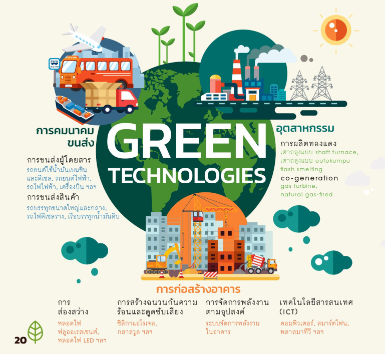

Green Economy หรือ เศรษฐกิจสีเขียว
เป็นเศรษฐกิจที่มุ่งเน้นให้เกิดความกินดีอยู่ดีของมนุษย์และความเท่าเทียมกันทางสังคม โดยตั้งอยู่บนฐานของการพัฒนาแบบยั่งยืน และคำนึงถึงความสัมพันธ์ของระบบนิเวศน์และเศรษฐกิจ เพื่อแก้ปัญหาโลกที่กำลังเผชิญกับความเสียสมดุลจากการเพิ่มขึ้นของประชากรโลกอย่างต่อเนื่อง ทำให้ทรัพยากรลดจำนวนลงไปมาก จนเกินความสามารถของโลกที่จะรองรับได้ จึงทำให้เกิดแนวคิด ESG (Environment, Social, และ Governance หรือ สิ่งแวดล้อม สังคม และ การกำกับดูแล) ซี่งเป็นแนวคิดเกี่ยวกับการพัฒนาขององค์กรอย่างยั่งยืน ปัจจุบัน ESG เป็นหนี่งในเทรนด์ที่ได้รับความนิยมจากนักลงทุนทั่วโลกในปัจจุบัน โดย Environment คำนึงถึงหลักเกณฑ์ในด้านความรับผิดชอบของบริษัทต่อสิ่งแวดล้อม Social คำนึงถึงหลักเกณฑ์ในด้านการจัดการความสัมพันธ์และมีการสื่อสาร กับลูกจ้าง suppliers ลูกค้า และผู้มีส่วนได้ส่วนเสีย และ Governance คำนึงถึงหลักเกณฑ์ในด้านการจัดการบริการความสัมพันธ์ในเชิงการกำกับดูแลที่มีประสิทธิภาพโปร่งใส ตรวจสอบได้ และคำนึงถึงผู้มีส่วนได้เสีย
สำคัญอย่างไร
BCG เป็นแนวทางการพัฒนาที่สอดรับกับเป้าหมายการพัฒนาที่ยั่งยืน (SDGs) ของสหประชาชาติอย่างน้อย 5 เป้าหมาย ได้แก่ การผลิตและบริโภคที่ยั่งยืน การรับมือการเปลี่ยนแปลงสภาพภูมิอากาศ การอนุรักษ์ความหลากหลาย ความร่วมมือเพื่อการพัฒนาที่ยั่งยืน การลดความเหลื่อมล้ำ และยังสอดรับกับปรัชญาของเศรษฐกิจพอเพียงซึ่งเป็นหลักสำคัญในการพัฒนาเศรษฐกิจและสังคมของประเทศไทย
เศรษฐกิจสีเขียวกับการพัฒนาอย่างยั่งยืน
เศรษฐกิจสีเขียวเกี่ยวข้องกับการพัฒนาอย่างยั่งยืนอย่างไกล้ชิด เพราะสนับสนุนการอยู่ร่วมกันของมนุษณ์กับสิ่งแวดล้อมในระยะยาว โดยอาศัย "เทคโนโลยีสีเขียว" ร่วมกับการบริหารจัดการที่ดี
เทคโนโลยีสีเขียวในปัจจุบัน
มีการแบ่งตามแต่แง่มุมในการพิจารณา โดย UNEP จัดแบ่งได้ 3 ด้านใหญ่ๆ ดังนี้
ประเทศไทยกับเศรษฐกิจสีเขียว
เหมาะสมเพราะมีการเกษตรเป็นรากฐานดังเดิม และยังสอดคล้องกับเศรษฐกิจชีวภาพ และเศรษฐกิจหมุนเวียน ทั้งหมกนี้จะนำไปสู่การลดคาร์บอนฟุตพรินต์ ซึ่งช่วยลดกระทบเป็นอย่างมาก
Karl Burkart ได้แบ่งเศรษฐกิจสีเขียวออกเป็น 6 ส่วน
- Green Energy
ซึ่งนำกลับมาใช้ใหม่ได้ เช่น พลังงานน้ำ ลม แสงแดด ความร้อนใต้พิภพ ฯลฯ เป็นพลังงานธรรมชาติที่ไม่หมดไปเหมือนเชื้อเพลิงฟอสซิล
- อาคารสีเขียว (Green Building)
อาคารที่สร้างขึ้นโดยใช้ทรัพยากรธรรมชาติอย่างมีประสิทธิภาพ คุ้มค่า มีความรับผิดชอบต่อสิ่งแวดล้อมและสังคมตลอดวัฏจักรชีวิต (life cycle) ของตัวอาคารในทุกขั้นตอน และประหยัดพลังงานในการใช้สอย เช่น การติดตั้งโซล่าเซลล์ ระบบหมุนเวียนน้ำฝนมาใช้ภายในอาคาร ฯลฯ โดยมีการใช้ LEED หรือ Leadership in Energy & Environmental Design ซี่งสภาอาคารเขียวสหรัฐอเมริกา หรือ U.S. Green Building Council (USGBC) โดยอาคารในประเทศไทยที่ได้รับการรับรองจาก LEED ได้แก่ อาคารพาร์คเวนเจอร์ สาทรสแควร์ คิงเพาเวอร์ดิวตี้ฟรีพัทยา ธนาคารกสิกรไทยสาขาพหลโยธิน ฯลฯ นอกจากนี้ประเทศไทยเรายังมีการใช้เกณฑ์ TREES (Thai’s Rating of Energy and Environmental Sustainability) เพื่อประเมินความยั่งยืนทางพลังงานและสิ่งแวดล้อมและถูกให้การรับรองอาคารประหยัดพลังงานและเป็นมิตรต่อสิ่งแวดล้อมตามมาตรฐานอาคารเขียว
- พาหนะสะอาด
ยานพาหนะซึ่งใช้พลังงานทางเลือกหรือพลังงานสะอาดแทนการใช้เชื้อเพลิงฟอสซิล เช่น รถไฮบริดจ์ รถพลังไฟฟ้า ฯลฯ
- การจัดการน้ำ
มีการอนุรักษ์แหล่งน้ำในธรรมชาติ บริหารจัดการทรัพยากรน้ำในเชิงเศรษฐกิจให้มีการใช้งานคุ้มค่า มีการบำบัดน้ำเสียจากกิจกรรมทางเศรษฐกิจให้กลับคืนสู่ธรรมชาติอย่างปลอดภัย ฯลฯ
- การจัดการของเสีย
การนำขยะกลับมาใช้ใหม่ การบำบัดของเสีย การออกแบบบรรจุภัณฑ์ ผลิตภัณฑ์ให้เกิดขยะน้อยที่สุด
- การจัดการที่ดิน
การอนุรักษ์ที่ดิน การฟื้นฟูสภาพดิน การจัดพื้นที่สีเขียวในเขตเมือง ป่าชุมชน เกษตรอินทรีย์ ฯลฯ